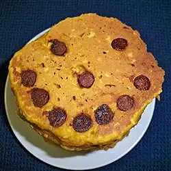

Jack-O-Lantern Pumpkin Pancakes
These make a special breakfast on cool fall mornings. Use any and all decorations you like to make jack-o-lantern faces on the pancakes. Try broken chocolate pieces, banana slices, raisins, crasins, or chopped nuts.
Ingredients
- 1 cup all-purpose flour
- 1 cup quick cooking oats
- ¼ cup brown sugar
- 2 teaspoons baking powder
- ¼ teaspoon ground cinnamon
- ¼ teaspoon ground cloves
- ½ teaspoon salt
- 1 cup milk
- 1 egg, beaten
- ¾ cup canned pumpkin
- 2 tablespoons vegetable oil
- ¾ cup semisweet chocolate chips
Directions
Stir together flour, oats, brown sugar, baking powder, cinnamon, cloves, and salt in a large bowl. In a separate large bowl, lightly beat together the milk, egg, pumpkin, and oil. Stir flour mixture into the pumpkin mixture, blending just until moistened.
Heat a lightly greased griddle over medium high heat.
Pour batter, 1/3 cup at a time, onto the prepared griddle. Make a jack-o-lantern face in each pancake with the chocolate chips. Cook until bubbles appear on the surface, then flip and cook until golden brown on the other side, about 5 minutes per side.
Nutrition
Per serving:347 calories; protein 7.6g; carbohydrates 52.3g; fat 13.7g; cholesterol 34.3mg; sodium 464.8mg.